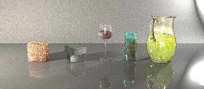
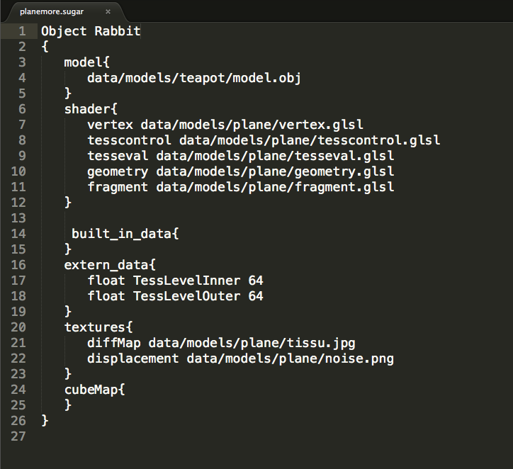
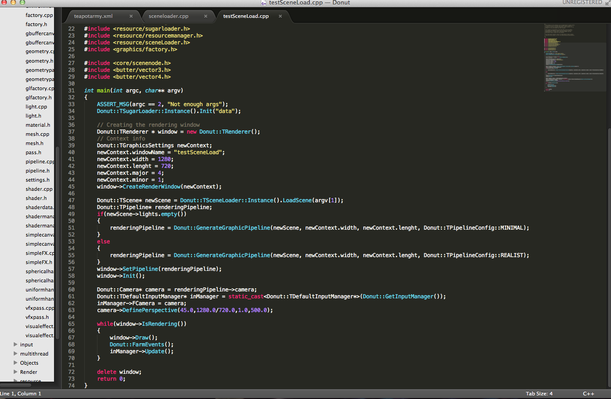
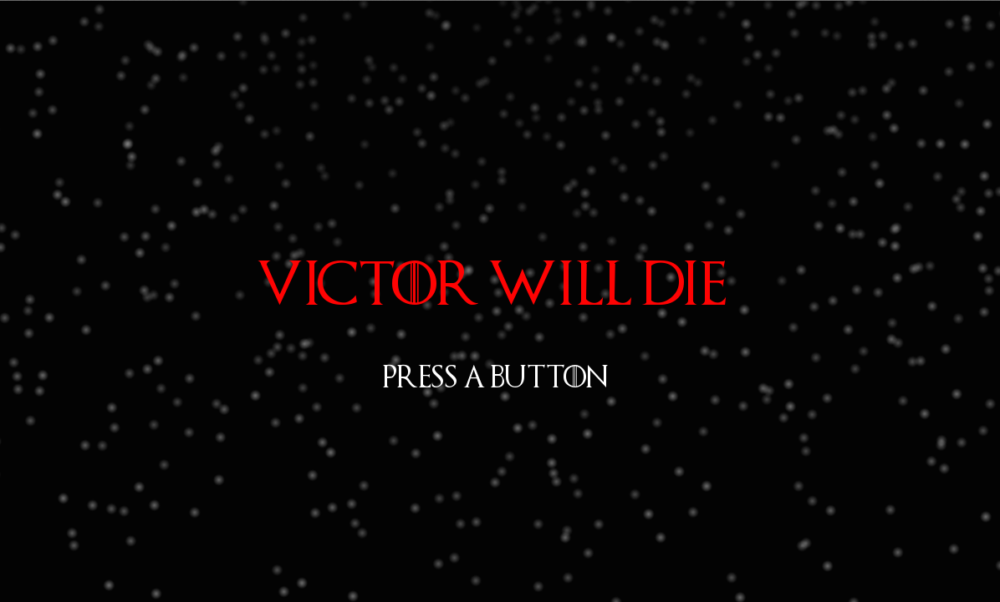
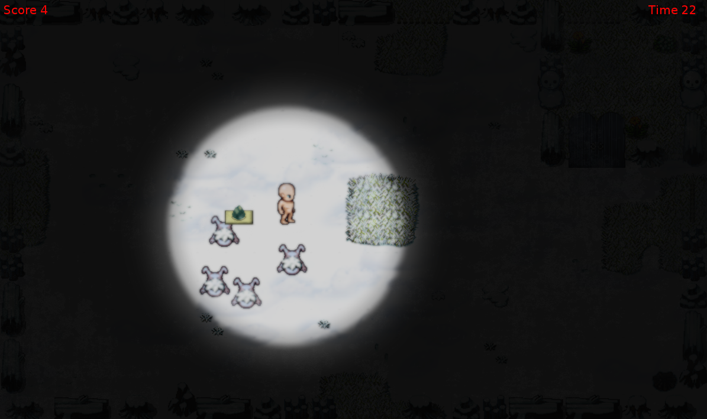
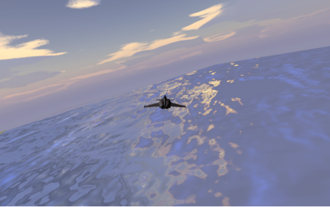
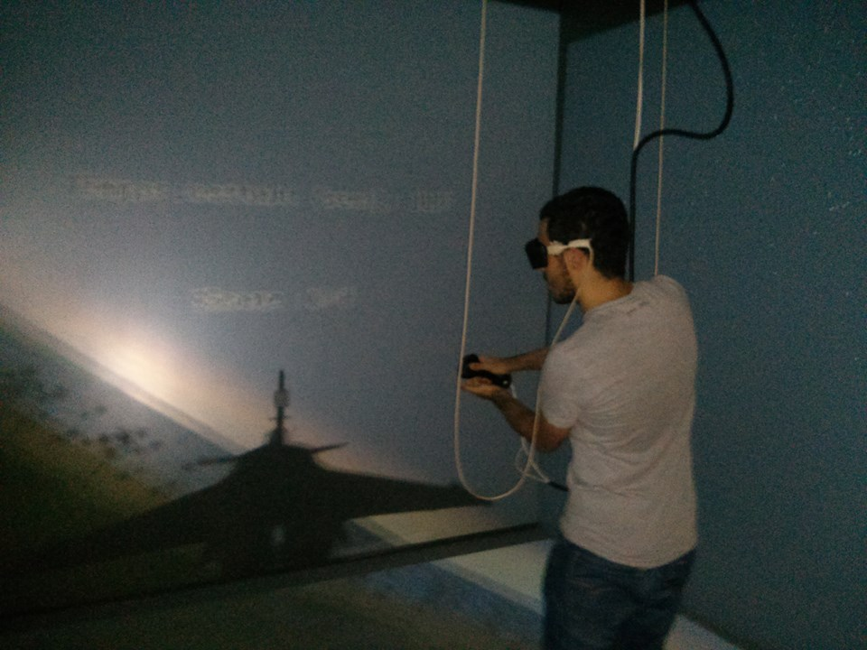
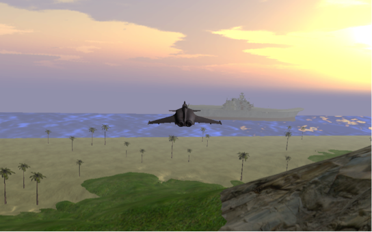

At Anis's.
Home sweet home.
Under construction.
Please take a look at my GitHub Profile for temporary information.
Fable C++ OpenGL GLSL OpenCL OpenMP MPI
My M.Sc thesis, will add description, videos and images asap :D !!Fireball C++ OpenGL GLSL OpenCL
A simple from scratch GPU particle system. Loads of particles is always something fancy :)


Walking around C++ OpenGL GLSL OpenCL OpenMP MPI
CPU offline rendering engine (Path Tracing, Bidirectional Path Tracing, Photon Mapping, Progressive Photon Mapping, PSSMLT, MMLT, Ambien occlusion...) for various effects (BRDF, BSSRDF, volumetric rendering, etc.).It provides an API for CPU and cluster parallelization! (and that is fun :p)

Donut C++ OpenGL GLSL PThread
A from scratch 3D multi-threaded game engine ( OpenGL 4.1, Tesselation, Networking, State Engine, etc). However, I cannot spend time on it for the moment! :(


Currently working on it, more details will come!
Victor will die Lua GLSL Love2D Tield
A nice game that I created with friends during a game jam :D (Fall 2014). Unique game ambiance, please if you have time: Try it!- Windows 32 bit;
- MAC OSX;
- Linux (refer to https://love2d.org/wiki/Getting_Started for launching it);

The character that you interact with is Victor: a naked guy in the snow. After searching near your spawn, you notice ... a firecamp!!!. The goal is to do anything to reach this fire...EVEN DIE! (Seems like it doesn't make any sense? Well it does...)
During the game, you are starting to feel cold, the controler is shaking, the music is getting more and more stressful... Reaching the fire will end this infinite loop and give you the information to understand the game. The enigma to solve is pretty complex (thanks Julien Deville) and cracking it would take you between 30 minutes and 1 hour.

If you are interested in it, you may take a look at the projet's source code, download it and run it!
FreeBird C++ GLSL OpenSceneGraph VRJuggler
An arcade-type flight simulator developped for the C.A.V.E (Cave automatic virtual environment). However, a non-VR version is also available is you don't have a CAVE in your cave :p. You simply need to have open-scene-graph and other common dependencies on your computer.

The user plays a "courageous" F16 pilot flying over a paradisiac island. His mission is to destroy a series of targets before the end of the timer using the weapons at his disposal: rockets and machine gun. You also can increase briefly your speed to reach the speed of sound. All this while listening to great hard rock music!
The C.A.V.E controller used for this game is the wand.

I worked alone on this project during a virtual reality course INF6802 that I took at Ecole polytechnique de Montréal on Fall 2013. Very interesting project, learned a lot during it :).
If you are interested in it, you may take a look at the projet's source code, download it and compile it!
Realtime Compute Shader ray tracerC++ GLSL
Basketball Pro Management (Proto) C# MOgre
I was supposed to provide a 3D basketball games viewer for this indie game. However, did not work well with the game owner. Still makes a cute basketball interface with animation and all the stuff.
Field: the game Lua GLSL Love2D Tield
Stickman. C++ Ogre3D Bullet physics SFML Blender
Watch Your Back. Lua Love2D
Ascension. Java Slick